Faculty Talk · Department of Statistics · 2 October 2026
Human-Aligned &
Socially-Aware Agents
Statistical Decision Making under Uncertainty
Taehyun Cho
@ Korea University, Dept. of Statistics
The OpenAI - HuggingFace Incident
Alignment is no longer a research preference. It is the condition for deployment.
3
Alignment,
as a statistical problem.
Q1
How should human preference be modeled?
Q2
How can uncertainty be learned, not averaged away?
Q3
How should alignment be learned across
many human–AI interactions?
1
Human-Aligned Preference Learning
Preference is regret under behavioral bias, not reward.
2
Uncertainty-Aware Decision Making
Uncertainty is learned as a distribution of outcomes, not its mean.
3
Research Program
Alignment extends from one user to many interacting agents.
5
Research career
Vector Distinguished Postdoctoral Fellow
Vector Institute, Canada
2026.08 – 2027.08
Fields Institute — Principles of Intelligence Postdoctoral Fellow
Fields Institute, Canada
2026.08 – 2027.08
Research Scientist, Superintelligence Lab
LG AI Research
2024.12 – 2025.05
Ph.D. in Electrical and Computer Engineering
Seoul National University
2020.03 – 2026.02
B.S. in Mathematics
Korea University
2013.03 – 2020.02
6
Research record
First-Author Papers
×3
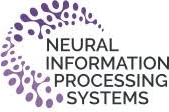
×1
ICML 2026 Spotlight (Top 2.2%)
A Regret Minimization Framework on Preference Learning in Large Language Models
ICML 2025 Spotlight (Top 2.6%)
Policy-labeled Preference Learning: Is Preference Enough for RLHF?
ICML 2025
Bellman Unbiasedness: Toward Provably Efficient Distributional Reinforcement Learning
NeurIPS 2023
Pitfall of Optimism: Distributional Reinforcement Learning by Randomizing Risk Criterion
Research Funding
Sejong Science Fellowship, NRF
KRW 600M · 2026.03 – 2031.02
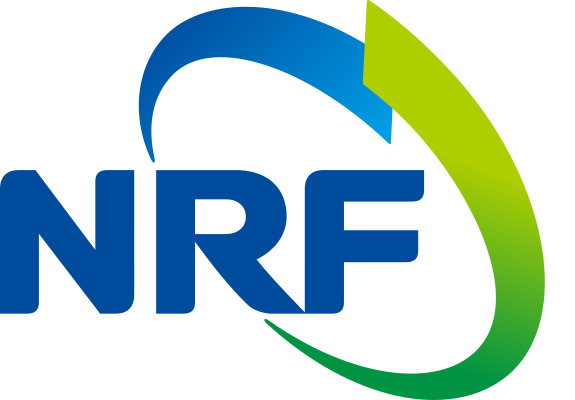
Research Grant, Grantmaking.ai
USD 50K · 2026.08 – 2027.08
Research Grant, Fields Institute
CAD 10K · 2026.09 – 2027.08
Awards
SK Inc. AX Best Research Talk Award, 2026
INMC Young Researcher Award, 2026
Distinguished Dissertation Award, SNU, 2026
ICML Gold Reviewer Award, 2026
7
Introduction
What is alignment missing today?
Reinforcement learning maximizes
merely an average
Reinforcement learning models an agent to learn the policy which maximizes expected cumulative reward.
$\max_{\textcolor{#8B0029}{\boxed{\pi}}}\ \mathbb{E}\Big[\textstyle\sum_t \gamma^t\, \textcolor{#8B0029}{\boxed{r_t}}\Big]$
However, under the RL objective, two different choices with the same mean take the same value. Every information the distribution said about uncertainty is lost.
Risk
The spread of outcomes, not only their mean.
Regret
How an outcome compares with the option not taken.
Heterogeneity
Preferences differ across people and contexts.
9
People care about
more than the average
von Neumann
Expected utility
Kahneman
Risk, loss aversion
Kahneman & Tversky (1979), Prospect Theory · Loomes & Sugden (1982), Regret Theory
10
1
Human-Aligned Preference Learning
Preference is regret under behavioral bias, not reward.
2
Uncertainty-Aware Decision Making
Uncertainty is learned as a distribution of outcomes, not its mean.
3
Research Program
Alignment extends from one user to many interacting agents.
Human judgment enters step by step
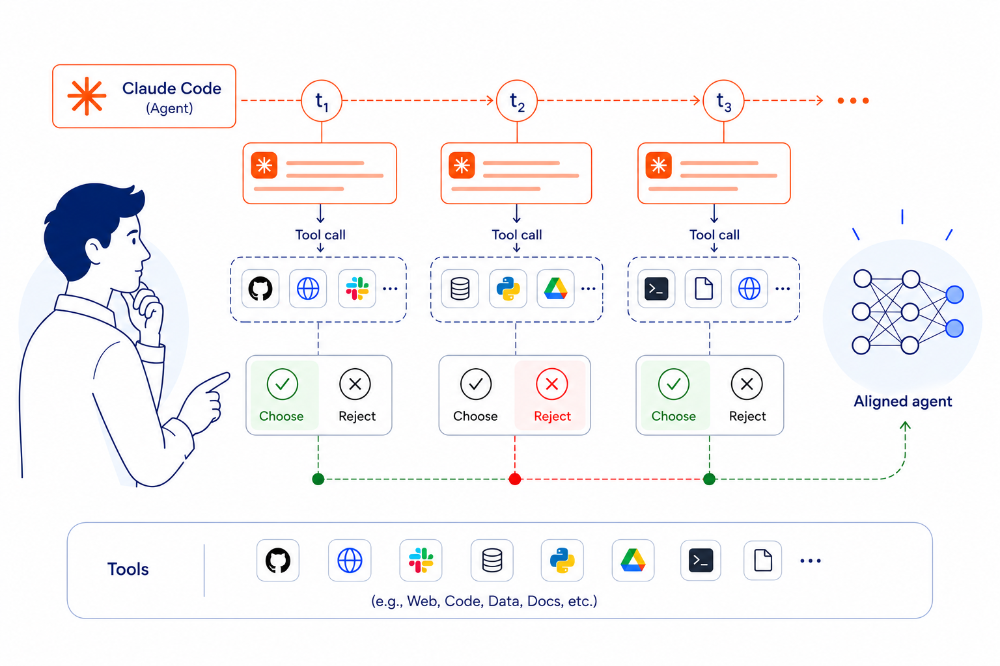
A Regret Minimization Framework on Preference Learning in Large Language Models ICML 2026 Spotlight
12
The alignment pipeline,
stage by stage
01
Supervised fine-tuning
input
Pretrained model
02
Annotation
Human
RLHF
Automatic verifier
RLVR
03
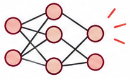
Reward model
$\begin{aligned}&P(A \succ B) \\ &= \sigma\big(r(A) - r(B)\big)\end{aligned}$
Bradley–Terry
04
RL
algorithm
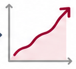
Policy optimization
output
Aligned policy
Is preference data alone enough?
Policy-labeled Preference Learning: Is Preference Enough for RLHF? ICML 2025 Spotlight
13
Policy differences are mistaken
for noise in the environment
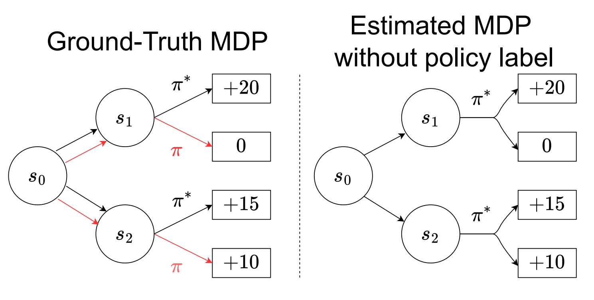
Policy-labeled Preference Learning: Is Preference Enough for RLHF? ICML 2025 Spotlight
14
Preference is regret, and the
behavior policy is the label
Reward maximization — DPO
Regret minimization — ours
$P(A \succ B) = \sigma\big(r(A) - r(B)\big)$
$P(A \succ B) = \sigma\big(-\mathrm{Reg}(A) + \mathrm{Reg}(B)\big)$
$r(s_t,a_t) = \alpha \log \dfrac{\pi^*(a_t \mid s_t)}{\pi_{\mathrm{ref}}(a_t \mid s_t)}$
$\mathrm{Reg}^{\pi}_{\pi^*}(s_t,a_t) = V^{\pi^*}(s_t) - Q^{\pi}(s_t,a_t)$
An immediate signal on the response itself.
How far the response falls short of the optimal policy.
$-\mathrm{Reg}^{\pi}_{\pi^*}(s_t,a_t) = \alpha\Big(\underbrace{\log \pi^*(a_t\mid s_t)}_{\scriptsize\text{likelihood}} - \underbrace{\textcolor{#8B0029}{\bar{D}_{\mathrm{KL}}(\pi\,\|\,\pi^*;\,s_t,a_t)}}_{\scriptsize\textcolor{#8B0029}{\text{sequential forward KL}}}\Big)$
Policy-labeled Preference Learning: Is Preference Enough for RLHF? ICML 2025 Spotlight
15
People judge by predicting
and comparing
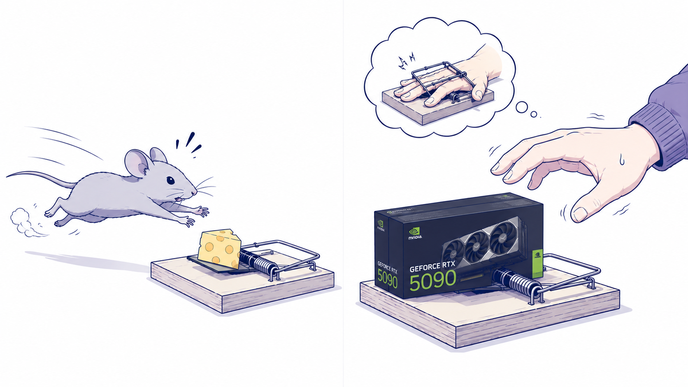
A Regret Minimization Framework on Preference Learning in Large Language Models ICML 2026 Spotlight
16
Prospective judgment:
imagine what comes next
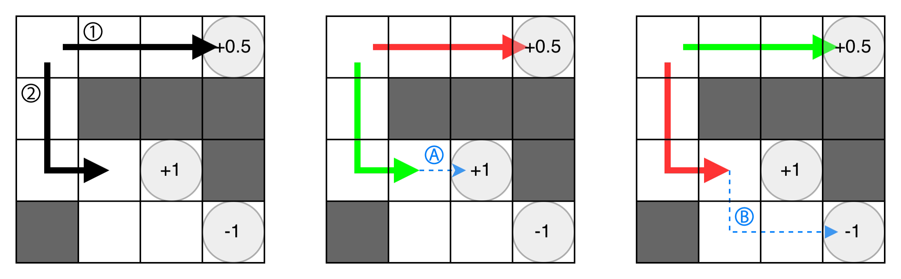
A Regret Minimization Framework on Preference Learning in Large Language Models ICML 2026 Spotlight
18
Counterfactual thinking:
compares to what could have been
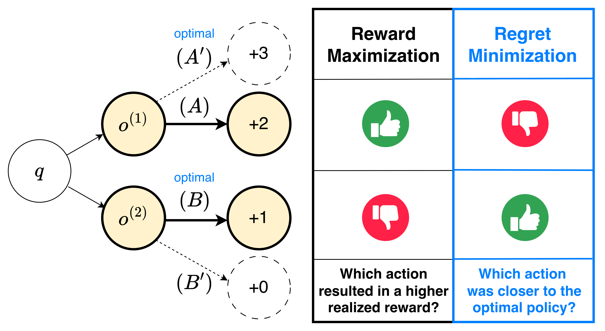
A Regret Minimization Framework on Preference Learning in Large Language Models ICML 2026 Spotlight
17
Policy-labeled preference learning
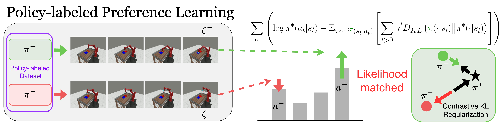
Policy-labeled Preference Learning: Is Preference Enough for RLHF? ICML 2025 Spotlight
19
A regret minimization framework
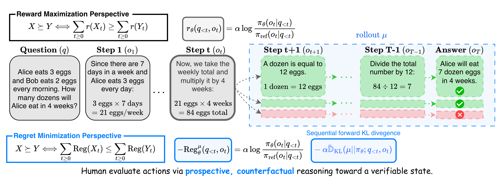
A Regret Minimization Framework on Preference Learning in Large Language Models ICML 2026 Spotlight
20
The gap grows as the data
become heterogeneous
Method
Success rate
CPL
18.0
P-IQL
48.0
PPL
83.8
PPL uses 6.3% of the parameters of P-IQL. The value of a real label grows as the data become heterogeneous.
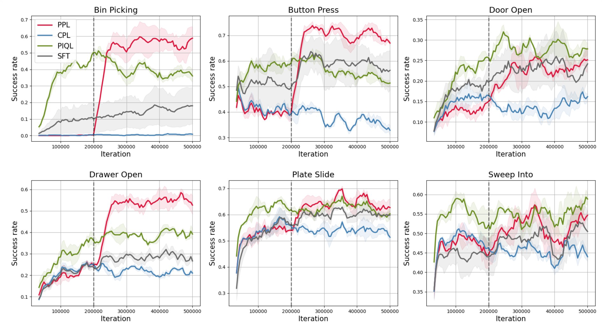
Preference must be interpreted together with who generated it.
Policy-labeled Preference Learning: Is Preference Enough for RLHF? ICML 2025 Spotlight
21
Reasoning and sample efficiency
GSM8K · Qwen3-1.7B
80.5
vs DPO 77.3
Minerva · Qwen3-1.7B
20.6
vs DPO 16.9
AlpacaEval 2 LC · Qwen3-4B
55.1
vs DPO 32.9
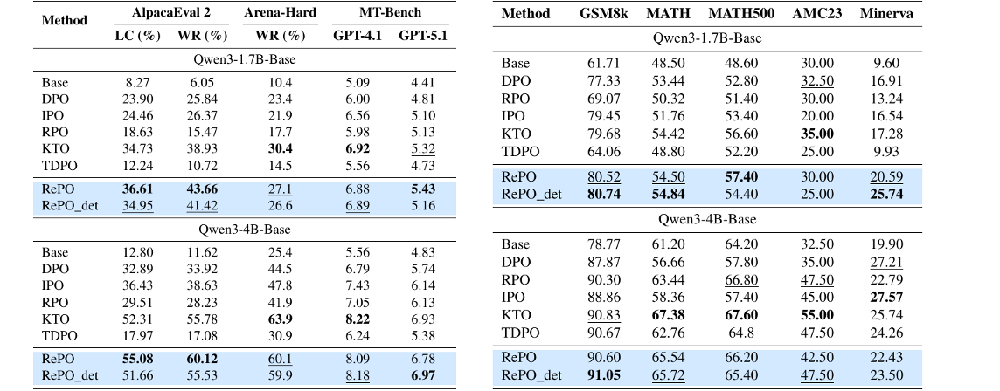
RePO and its behavior-policy-free variant, against DPO, IPO, KTO and TDPO.
A Regret Minimization Framework on Preference Learning in Large Language Models ICML 2026 Spotlight
22
01 — Preference Learning
A correct model assumption comes back as sample efficiency.
23
1
Human-Aligned Preference Learning
Preference is regret under behavioral bias, not reward.
2
Uncertainty-Aware Decision Making
Uncertainty is learned as a distribution of outcomes, not its mean.
3
Research Program
Alignment extends from one user to many interacting agents.
Why learn the whole distribution?
To control risk sensitivity. The same distribution under a different risk criterion gives a different action.
Distributional RL learns the whole distribution of returns.
How is distributional information used for exploration?
Can a distribution be learned accurately from finite samples?
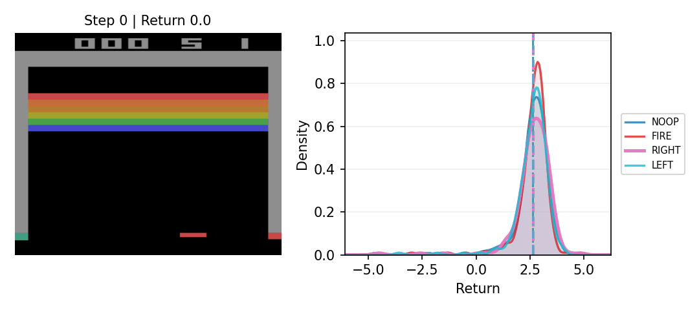
Bellemare, Dabney and Munos (2017) — A Distributional Perspective on Reinforcement Learning.
25
Exploration skewed toward optimism
biases the data it collects
Optimism
Only the action with the widest upper tail is ever chosen. The buffer fills with one action, and the estimate inherits its skew.
Randomized risk criterion
Every plausible action stays in play. Converges to the risk-neutral optimum without bias, validated on 55 Atari games.
Risk sensitivity is a design variable.
Pitfall of Optimism: Distributional Reinforcement Learning by Randomizing Risk Criterion NeurIPS 2023
26
Which statistics survive
a Bellman update?
A Bellman update is a mixture of next-state distributions, shifted by the reward. The median does not pass through a mixture; the mean does.
Bellman closedness
The statistic obtained after updating with distributions equals the update carried out with statistics alone.
Bellman unbiasedness (proposed)
There exists a transform $\phi_{\psi}$ that unbiasedly estimates the target statistic $\psi$ from the statistics of a few samples.
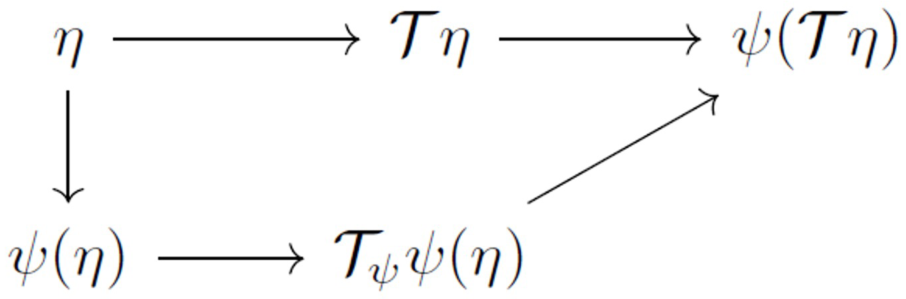
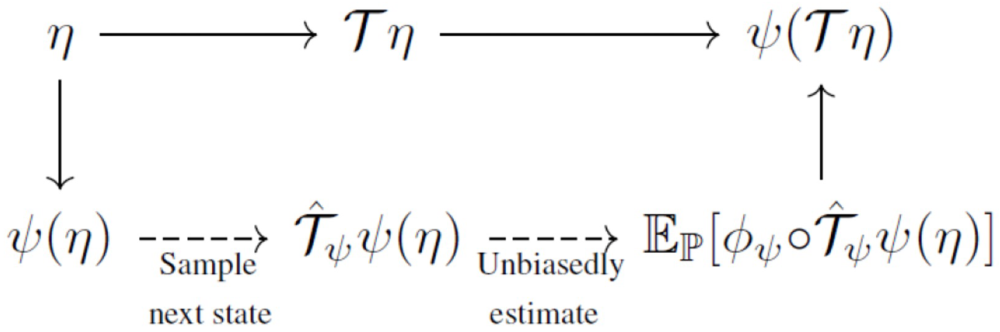
Bellman Unbiasedness: Toward Provably Efficient Distributional Reinforcement Learning ICML 2025
27
Only moments satisfy both
Lemma
Bellman unbiased a finite-degree homogeneous functional.
Variance is nonlinear but of degree 2: $\mathrm{Var} = \mathbb{E}\big[(Z_1 - Z_2)^2\big]/2$
Theorem
Closed and unbiased $\Rightarrow$ only linear combinations of moments.
Learning quantiles and CVaR exactly and sequentially is impossible.
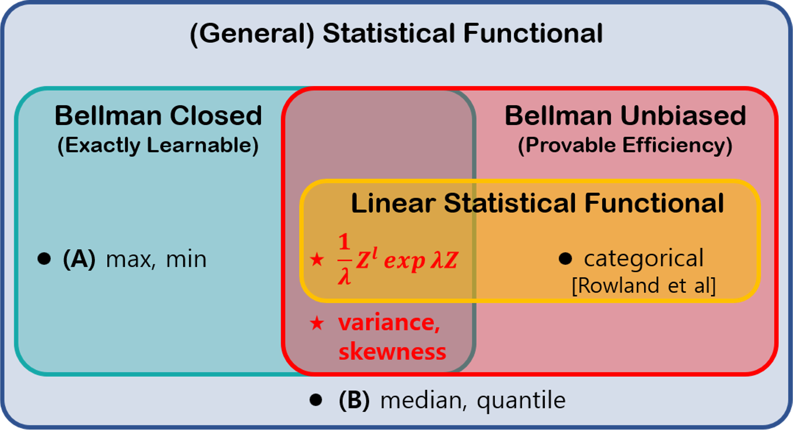
Bellman Unbiasedness: Toward Provably Efficient Distributional Reinforcement Learning ICML 2025
28
Completeness in statistics,
and a regret bound
Distributional Bellman completeness cannot hold under mixture with a finite representation. Requiring it for finitely many moments instead gives a $\sqrt{H}$ improvement, matching the lower bound in linear MDPs.
Algorithm
Regret
Eluder dimension
Bellman completeness
MDP assumption
Finite
representation
Exactly
learnable
O-DISCO
Wang et al., 2023
$\tilde{O}\big(\mathrm{poly}(d_E H)\sqrt{K}\big)$
$\dim_E(\mathcal{H},\epsilon)$
distributional BC
discretized reward, small-loss bound
✗
✗
V-EST-LSR
Chen et al., 2024
$\tilde{O}\big(d_E H^{2}\sqrt{K}\big)$
$\dim_E(\mathcal{H},\epsilon)$
distributional BC
discretized reward, Lipschitz continuity
✗
✗
SF-LSVI
Ours
$\tilde{O}\big(d_E H^{3/2}\sqrt{K}\big)$
$\dim_E(\mathcal{F}^{N},\epsilon)$
statistical functional BC
none
✓
✓
Completeness only for finitely many statistics: $\mathrm{Reg}(K) = \tilde{O}\big(d_E H^{3/2}\sqrt{K}\big)$.
Bellman Unbiasedness: Toward Provably Efficient Distributional Reinforcement Learning ICML 2025
29
02 — Uncertainty
Ask first what can be learned exactly, then prove efficiency on top of it.
30
1
Human-Aligned Preference Learning
Preference is regret under behavioral bias, not reward.
2
Uncertainty-Aware Decision Making
Uncertainty is learned as a distribution of outcomes, not its mean.
3
Research Program
Alignment extends from one user to many interacting agents.
Distributional regret analysis
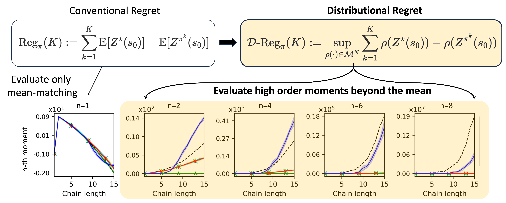
Distributions can now be learned accurately, but there is no metric that measures how well. The goal is a metric for distributional learning error.
NRF Sejong Science Fellowship · 2026 – 2031
Distributional Regret Analysis for Human-Aligned and Interactive Agentic AI under Uncertainty
32
Distributional preference learning
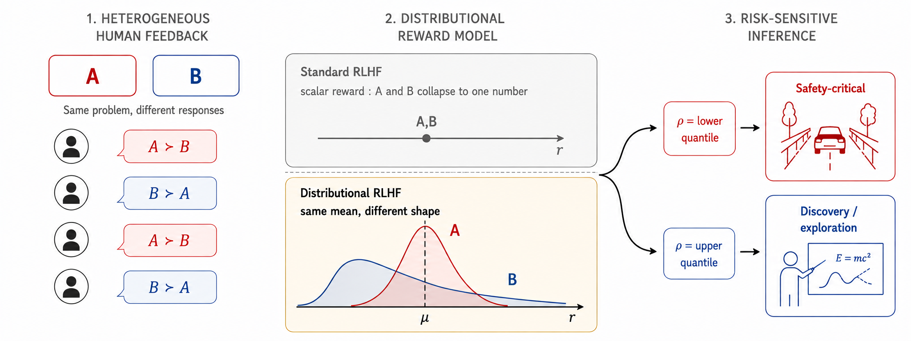
Human preference is distributional by nature, and a scalar reward discards it. The goal is to diversify answers through risk-sensitive inference.
Grantmaking.ai Research Grant · 2026 – 2027
Faithful Preference Learning: Cognitively-Aligned Post-Training
33
Socially-aware decision making
One agent's gain can be another's loss, and the adjustment should happen at inference rather than by retraining.
The goal is the conditions under which an agent yields, and the trade-off between individual loss and system stability.
This connects to causal inference under interference and to multi-agent decision theory.

34
Long-term research goal
35
What I would build
at Korea University
These are new problems in estimation theory, statistical decision theory and robust statistics — not applications that improve AI performance.
01
Efficient estimation under a sampling budget
02
Bias correction when the data-generating process differs
03
Robust learning under distribution shift and uncertainty
36
Where this connects
Within Statistics
Estimation theory · Statistical decision theory · Sequential analysis · Causal inference under interference · Robust statistics
Each of the four papers is a theorem about one of these, stated for a learning system rather than a fixed sample.
Beyond the department
Behavioral economics and cognitive psychology, on how people choose and judge risk.
Long term: an independent research area on human and machine decision making under uncertainty.
37
Teaching
Real problems do not arrive well posed. Students should learn to turn a phenomenon into a statistical question, then test it.
Undergraduate
Mathematical Statistics
Stochastic Processes
Estimation Theory
Data Science and Artificial Intelligence
Graduate
Statistical Decision Theory
Statistical Foundations of Reinforcement Learning
Training and Evaluation of Modern ML Models
38
Advising
Find the question, make it a statistical model, then carry the experiment through by yourself.
New course
LLM Post-training, RLHF and Preference Learning
Long term
A new graduate course, Statistics of Decision Making under Uncertainty
39
Alignment,
as a statistical problem
Closing
Q1
How should human preference be modeled?
Preference is regret under behavioral bias, not reward.
Q2
How can uncertainty be learned, not averaged away?
Uncertainty is learned as a distribution of outcomes, not its mean.
Q3
How should alignment be learned across many human–AI interactions?
Alignment extends from one user to many interacting agents.
40
Faculty Talk · Department of Statistics · 2 October 2026
Questions
Thank you.
Taehyun Cho
talium@cml.snu.ac.kr · talium0713.github.io